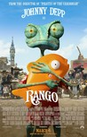
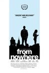
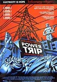
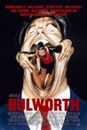
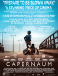
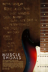
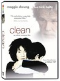

Movie Releases By Score

|
1901.
The Naked Gun: From the Files of Police Squad!
Release Date:
December 2, 1988

Leslie Nielsen stars as Police Squad's own granite-jawed, rock-brained cop Frank Drebin, who bumbles across a mind-control scheme to assassinate Queen Elizabeth. Priscilla Presley, O.J. Simpson, a stuffed beaver, two baseball teams and an odd assortment of others join the wacko goings-on and blow the laugh-o-meter to smithereens. (Paramount)
|

|
1902.
Police Story
Release Date:
September 26, 1987
A virtuous Hong Kong Police Officer must clear his good name when the drug lords he is after frames him for the murder of a dirty cop.
|

|
1903.
Sound City
Release Date:
January 31, 2013
Dave Grohl directs this documentary about the legendary, but now defunct, analog recording studio in Van Nuys, California.
|
1904.
Greenberg
Release Date:
March 19, 2010

Roger Greenberg, single, fortyish and at a crossroads in his life, finds himself in Los Angeles, house-sitting for six weeks for his more successful/married-with-children brother. In search of a place to restart his life, Greenberg tries to reconnect with old friends including his former bandmate Ivan. But old friends aren't necessarily still best friends, and Greenberg soon finds himself spending more and more time with his brother's personal assistant Florence, an aspiring singer and also something of a lost soul. Despite his best attempts not to be drawn in, Greenberg and Florence manage to forge a connection, and Greenberg realizes he may at last have found a reason to be happy. [Focus Features]
|
|

|
1905.
The Mend
Release Date:
August 21, 2015
NYC brothers, loose cannon Mat (Josh Lucas) and put-upon Alan (Stephen Plunkett) stagger dimly towards some understanding of love, women, masculinity and what it truly means to be a brother.
|

|
1906.
The Girl with the Dragon Tattoo
Release Date:
March 19, 2010
Forty years ago, Harriet Vanger disappeared from a family gathering on the island owned and inhabited by the powerful Vanger clan. Her body was never found, yet her uncle is convinced it was murder and that the killer is a member of his own tightly knit but dysfunctional family. He employs disgraced financial journalist Mikael Blomkvist and the tattooed, ruthless computer hacker Lisbeth Salander to investigate. When the pair link Harriet's disappearance to a number of grotesque murders from almost forty years ago, they begin to unravel a dark and appalling family history. But the Vanger's are a secretive clan, and Blomkvist and Salander are about to find out just how far they are prepared to go to protect themselves. "The Girl With The Dragon Tattoo" is based on the trilogy of books by Stieg Larsson and has sold over 7 million copies worldwide. Tragically, Larsson did not live to see the phenomenon his work has become as he died suddenly in 2004 soon after delivering the manuscripts to his Swedish publisher. (Music Box Films)
|
1907.
Five Star
Release Date:
July 24, 2015
A member of the notorious Bloods since he was 12 years old — both in the film and in real life — Primo takes John, the son of his slain mentor, under his wing, versing him in the code of the streets. [XLrator Media]
|
|

|
1908.
For Ahkeem
Release Date:
October 13, 2017
After a school fight lands 17-year old Daje Shelton in a court-supervised alternative high school, she's determined to turn things around and make a better future for herself in her rough St. Louis neighborhood. But focusing on school is tough as she loses multiple friends to gun violence, falls in love for the first time, and becomes pregnant with a boy, Ahkeem, just as Ferguson erupts a few miles down the road. Through Daje's intimate coming-of-age story, For Ahkeem illuminates challenges that many Black teenagers face in America today, and witnesses the strength, resilience, and determination it takes to survive.
|
1909.
The Chronicles of Narnia: The Lion, the Witch and the Wardrobe
Release Date:
December 9, 2005
C.S. Lewis' timeless adventure follows the exploits of the four Pevensie siblings -- Lucy, Edmund, Susan and Peter -- in World War II England who enter the world of Narnia through a magical wardrobe while playing a game of hide-and-seek in the rural country home of an elderly professor. Once there, the children discover a charming, peaceful land inhabited by talking beasts, dwarfs, fauns, centaurs and giants that has become a world cursed to eternal winter by the evil White Witch, Jadis. Under the guidance of a noble and mystical ruler, the lion Aslan, the children fight to overcome the White Witch's powerful hold over Narnia in a spectacular climactic battle that will free Narnia from Jadis' icy spell forever. (Walt Disney Pictures / Walden Media)
|
|

|
1910.
Kids for Cash
Release Date:
February 7, 2014
Kids For Cash is a riveting look behind the notorious judicial scandal that rocked the nation. Beyond the millions paid and high stakes corruption, Kids For Cash exposes a shocking American secret. In the wake of the shootings at Columbine, a small town celebrates a charismatic judge who is hell-bent on keeping kids in line...until one parent dares to question the motives behind his brand of justice. This real life thriller reveals the untold stories of the masterminds at the center of the scandal and the chilling aftermath of lives destroyed in the process - a stunning emotional roller coaster.
|

|
1911.
Loveless
Release Date:
February 18, 2011
"Loveless" is a darkly witty urban comedy about Andrew, a New York City commitment-phobe stringing along his ex-girlfriend while he chases younger women. When he meets the sexy, secretive Ava, Andrew becomes entangled with her bizarre, cult-like family. Comedy and pathos collide as the family’s absurd obsessions leave Andrew doubting his sanity and safety. (Streetlight Films)
|
1912.
Don't Blink - Robert Frank
Release Date:
July 13, 2016
Robert Frank revolutionized photography and independent film. He documented the Beats, Welsh coal miners, Peruvian Indians, The Stones, London bankers, and the Americans. This is the bumpy ride, revealed with unblinking honesty by the reclusive artist himself.
|
|

|
1913.
The Bad Kids
Release Date:
December 16, 2016
Located in an impoverished Mojave Desert community, Black Rock Continuation High School is one of California’s alternative schools for students at risk of dropping out. Every student here has fallen so far behind in credits that they have no hope of earning a diploma at a traditional high school. Black Rock is their last chance. [FilmRise]
|

|
1914.
The Hit
Release Date:
March 8, 1985
Ten years later, after ratting on his old mobster friends in exchange for personal immunity, two hit men drive a hardened criminal to Paris for his execution. However, while on the way, whatever can go wrong, does go wrong.
|

|
1915.
Beetle Queen Conquers Tokyo
Release Date:
May 14, 2010
Like a detective story, the film untangles the web of influences behind Japan’s captivation with insects. It opens in modern-day Tokyo where a single beetle recently sold for $90,000 then slips back to the early 1800s, to the first cricket-selling business and the development of haiku and other forms of insect literature and art. Through history and adventure, Beetle Queen Conquers Tokyo travels all the way back in time to stories of the fabled first emperor who named Japan the “Isle of the Dragonflies.” (Argot Pictures)
|

|
1916.
Norman: The Moderate Rise and Tragic Fall of a New York Fixer
Release Date:
April 14, 2017
Norman Oppenheimer (Richard Gere) is a small time operator who befriends a young politician at a low point in his life. Three years later, when the politician becomes an influential world leader, Norman's life dramatically changes for better and worse.
|

|
1917.
Under The Wire
Release Date:
November 16, 2018
On 13 February 2012, two journalists entered war-ravaged Syria. One of them was celebrated Sunday Times war correspondent, Marie Colvin. The other was photographer, Paul Conroy. Their aim was to cover the plight of Syrian civilians trapped in Homs, a city under siege and relentless military attack from the Syrian army. Only one of them returned. This is their story. [Abramorama]
|

|
1918.
A Family Affair
Release Date:
September 16, 2016
On his 30th birthday, Tom Fassaert receives a mysterious invitation from his 95-year-old grandmother Marianne to come visit her in South Africa. At that time, the only thing he knows about her are the myths and predominantly negative stories his father told him she was a femme fatale who went through countless men, a famous model in the 1950s, and a mother that put her two sons into a children’s home. Fassaert decides to accept her invitation. But when his grandmother makes an unexpected confession, his venture becomes much more complicated than he could ever have imagined.
|
1919.
Lucas
Release Date:
March 28, 1986
A socially inept fourteen year old (Corey Haim) experiences heartbreak for the first time when his two best friends -- Cappie, an older-brother figure, and Maggie, the new girl with whom he is in love -- fall for each other.
|
|

|
1920.
OT: Our Town
Release Date:
August 15, 2003
At Dominquez High School in Compton, California, basketball is valued above all else. The school has not staged a play in over twenty years. With no budget and no stage, English teacher Catherine Borek attempts to mount a theatrical production of Thornton Wilder's "Our Town," in an effort to make a change. In the process she takes her fledgling students on a journey of self-discovery. (Film Movement)
|
1921.
Pistol Opera
Release Date:
June 13, 2003
In this belated sequel to director Seijun Suzuki's 1967 film "Branded to Kill," a female assassin rises in the criminal underworld.
|
|
1922.
La Cienaga
Release Date:
October 3, 2001
A series of surreal moments and twisted family relationships is revealed as two large families spend a torpid summer together in a faded resort town in Northwest Argentina.
|
|

|
1923.
State and Main
Release Date:
December 22, 2000
A big-budget movie crew descends upon a quaint New England village, sowing a bumper crop of corruption, vanity and greed. (Fine Line Features)
|

|
1924.
Taboo
Release Date:
October 6, 2000
Set in 1865 in a Kyoto samurai fortress, this movie explores the homosexual attraction between young recruits and their superiors.
|

|
1925.
The Life and Times of Hank Greenberg
Release Date:
February 18, 2000

A humorous and nostalgic documentary about an extraordinary baseball player who transcended ethnic and religious prejudice to become an American icon. (Cowboy Booking International)
|

|
1926.
The Holy Girl
Release Date:
April 29, 2005
Martel intimately explores the burgeoning sexuality and religious fervor of two teenage girls, Amalia (Alche) and her best friend, Josefina (Zylberberg). Artfully piecing together a mosaic of nuanced details, fragments of sounds, and small moments, Martel creates a potent and specific portrait of adolescent life. (Lita Stantic Producciones SA)
|

|
1927.
Young@Heart
Release Date:
April 9, 2008
Prepare to be entertained by the inspiring individuals of Young@Heart, a New England senior citizens' chorus that has delighted audiences worldwide with their covers of songs by everyone from The Clash to Coldplay. As Stephen Walker's documentary begins, the retirees, led by their strict musical director, are rehearsing their new show, struggling with a discordant Sonic Youth number and giving new meaning to James Brown's "I Feel Good." What ultimately emerges is a funny and unexpectedly moving testament to friendship, creative inspiration, and reaching beyond expectations. (Fox Searchlight)
|
|  |
1928.
Rango
Release Date:
March 4, 2011
The story follows the comical, transformative journey of Rango, a sheltered chameleon living as an ordinary family pet, while facing a major identity crisis. After all, how high can you aim when your whole purpose in life is to blend in? When Rango accidentally winds up in the gritty, gun-slinging town of Dirt - a lawless outpost populated by the desert's most wily and whimsical creatures - the less-than-courageous lizard suddenly finds he stands out. Welcomed as the last hope the town has been waiting for, new Sheriff Rango is forced to play his new role to the hilt . . . until, in a blaze of action-packed situations and encounters with outrageous characters, Rango starts to become the hero he once only pretended to be. (Paramount Pictures)
|

|
1929.
Repo Man
Release Date:
March 2, 1984
Otto (Estevez) loses his job as a stock boy in a supermarket in Los Angeles and spends his evenings in the punk underground before encountering Bud (Stanton) who brings him into the life of professional car repossessing. Meanwhile, a nuclear physicist (Harris) has stolen something dangerous and glowing which he stashes into the trunk of his 1964 Chevy Malibu. A mid-eighties cult classic.
|

|
1930.
Patience (After Sebald)
Release Date:
May 11, 2012
A richly textured essay film on landscape, art, history, life and loss, Patience (After Sebald) offers a unique exploration of the work and influence of internationally acclaimed writer W.G. Sebald (1944 – 2001). With contributions from major writers, artists and filmmakers, the film is structured around a walk through coastal East Anglia, the same path followed by Sebald in his ground-breaking book, “The Rings of Saturn.” (Cinema Guild)
|

|
1931.
Border
Release Date:
October 26, 2018
Tina (Eva Melander) is a border guard who has the ability to smell human emotions and catch smugglers. When she comes across a mysterious man with a smell that confounds her detection, she is forced to confront hugely disturbing insights about herself and humankind.
|
|  |
1932.
From Nowhere
Release Date:
February 17, 2017
Three undocumented teenagers — Moussa (J. Mallory McCree) an African Muslim teen living in fear of persecution, Sophie (Octavia Chavez-Richmond) a troubled teen from the Dominican Republic, and Alyssa (Raquel Castro) a straight-A student from Peru—are just about to graduate high school in the Bronx. Like most teenagers, all they want to do is hang with their friends, fall in love, and figure out where to go to college, but unlike their American classmates, these three live with the threat of being discovered by the authorities. When one of their teachers connects them with a lawyer to help them get their papers, the teens start to dig into their family histories to assist their immigration cases. As they continue to deal with the everyday problems of adolescence, the teenagers are forced to confront their past and, at the same time, fight for their future. [FilmRise]
|

|
1933.
Frank
Release Date:
August 15, 2014
A young wannabe musician, Jon (Domhnall Gleeson), finds himself out of his depth when he joins an avant-garde pop band led by the mysterious and enigmatic Frank (Michael Fassbender), a musical genius who hides himself inside a large fake head, and his terrifying bandmate Clara (Maggie Gyllenhaal).
|

|
1934.
Europa Europa
Release Date:
May 9, 1991
A boy in Nazi Germany, trying to conceal that he is Jewish, joins the Hitler Youth.
|

|
1935.
Easy Money
Release Date:
July 11, 2012
Easy Money is a Swedish crime thriller based on the international best-selling novel Snabba Cash by Jens Lapidus. Lower-class business student JW falls in love with a sexy heiress while living a double life mingling with Stockholm’s wealthy elite. To keep up the façade of his lifestyle, he’s lured into a world of crime. Jorge is a petty fugitive on the run from both the police and Serbian mafia. He hopes that brokering a massive cocaine deal will allow him to escape for good. Mafia enforcer Mrado is on the hunt for Jorge, but his efforts are complicated when he’s unexpectedly saddled with caring for his young daughter. As JW’s journey ventures deeper into the dark world of organized crime, the fate of all three men becomes entangled and ends with a dramatic struggle for life and death. (The Weinstein Company)
|

|
1936.
Invasion of the Body Snatchers
Release Date:
December 22, 1978
In San Francisco, a group of people discover the human race is being replaced one by one with clones devoid of emotion.
|
1937.
The Art of the Steal
Release Date:
February 26, 2010
In 1922, Dr. Albert C. Barnes created The Barnes Foundation in Lower Merion Pennsylvania, five miles outside of Philadelphia. He formed this remarkable collection of Post-Impressionist and early Modern art to serve as an educational institution. Dr. Barnes built his Foundation away from the city and cultural elite who scorned his collection as “horrible, debased art,” and set it on the grounds of his own home, an arboretum in the leafy suburbs. Tastes changed, and soon the very people who belittled Barnes wanted access to his collection. When Dr. Barnes died in a car accident in 1951, he left control of his collection to Lincoln University, a small African-American college. His will contained strict instructions, stating the Foundation shall always be an educational institution, and the paintings may never be removed. Such strict limitations made the collection safe from commercial exploitation. But was it really safe? More than fifty years later, a powerful group of moneyed interests have gone to court to take the art – recently valued at more than $25 billion – and bring it to a new museum in Philadelphia. Standing in their way is a group of former students who are trying to block the move. Will the students succeed, or will a man’s will be broken and one of America’s greatest cultural monuments be destroyed? (Sundance Selects)
|
|

|
1938.
Tin Men
Release Date:
March 13, 1987
A minor car accident drives two rival aluminum-siding salesmen to the ridiculous extremes of man versus man in 1963 Baltimore.
|

|
1939.
What Happened, Miss Simone?
Release Date:
June 24, 2015
A classically trained musical genius, chart-topping chanteuse, and Black Power icon, Nina Simone is one of the most influential, beloved, provocative, and least understood artists of our time. On stage, she was known for utterly free, rapturous performances, earning her the epithet "High Priestess of Soul." But amid the violent, day-to-day fight for civil rights, she struggled to reconcile artistic ambition with her fierce devotion to a movement.
|

|
1940.
Bodied
Release Date:
November 2, 2018
A progressive graduate student finds success and sparks outrage when his interest in battle rap as a thesis subject becomes a competitive obsession.
|

|
1941.
Sleepless Night
Release Date:
May 11, 2012
Sleepless Night tells the story of Vincent, a respected and dedicated police officer, or so it seems. After stealing a massive bag of cocaine from drug dealers that work for Marciano, a powerful mob boss/nightclub owner, Vincent quickly finds himself trapped in a situation that no parent would envy- his son has been kidnapped with the promise of being executed if he doesn’t immediately deliver the bag back to its rightful owner. As Vincent heads to the nightclub in the outskirts of Paris to trade the drugs for his son, he soon gets caught in an intense, claustrophobic cat-and-mouse game that quickly spirals into madness as the tables are constantly turned multiple times throughout the evening. The night to come might not only be the longest but also the last one of his life... and his young son’s as well. [Tribeca Film]
|

|
1942.
Fear and Trembling
Release Date:
November 19, 2004
Amélie, a dreamy and romantic young Belgian woman, arrives in Japan to begin work as a translator for the giant Yumimoto Corporation. For Amélie, who spent her childhood in Japan, this is a dream come true. But unfamiliar with the customs of the Japanese workplace, she commits a series of cultural missteps and is singled out as a deviant within the company. Unable to stop her downfall, Amélie suddenly stumbles upon her own extraordinary means of liberation. [Cinema Guild]
|

|
1943.
Ruben Brandt, Collector
Release Date:
February 15, 2019
Ruben Brandt, a famous psychotherapist, is forced to steal 13 paintings from the world's renowned museums and private collections to prevent his suffering from terrible nightmares he has as a result of subliminal messaging he received as a child. Accompanied by his four patients, he and his band of thieves strike regularly and with great success. The Collector quickly becomes the most wanted criminal in the world. Gangsters and headhunters chase him around the world while the reward for his capture keeps rising, approaching a hundred million dollars. A cartel of insurance companies entrusts Mike Kowalski, a private detective and leading expert on art theft, to solve the Collector Case. [Sony Pictures Classics]
|
|  |
1944.
Power Trip
Release Date:
December 12, 2003
In an environment of pervasive corruption, assassination, and street rioting, the story of chaotic post-Soviet transition is told through culture clash, electricity disconnections and blackouts. (Films Transit International)
|

|
1945.
Man on the Train
Release Date:
May 9, 2003
The story of two men who might never have met but for an accident, who appear to have nothing in common, yet who change each other's view of life at the last possible moment. (Paramount Classics)
|
|  |
1946.
Bulworth
Release Date:
May 19, 1998
A 'tragic-farce,' Bulworth takes a comedic look at race and class in the United States, campaign finance, and the power of big money and media in America. [Twentieth Century Fox]
|

|
1947.
Jeremiah Johnson
Release Date:
May 12, 1972
A mountain man who wishes to live the life of a hermit becomes the unwilling object of a long vendetta by Indians, and proves to be a match for their warriors in one-on-one combat on the early frontier.
|
1948.
Blaze
Release Date:
August 17, 2018
Blaze is inspired by the life of Blaze Foley (Ben Dickey), the unsung songwriting legend of the Texas outlaw music movement that spawned the likes of Merle Haggard and Willie Nelson. The film weaves together three different periods of time, braiding re-imagined versions of Blaze’s past, present and future. The different strands explore his love affair with Sybil Rosen; his last, dark night on earth; and the impact of his songs and his death had on his fans, friends, and foes. The braided storyline terminates in a bittersweet ending that acknowledges Blaze’s profound highs and lows, as well as the impressions he made on the people who shared his journey. [Sundance Selects]
|
|

|
1949.
Rush
Release Date:
September 20, 2013
Set against the glamorous golden age of Formula 1 racing in the 1970s, Rush tells the true story of the great rivalry between handsome English playboy James Hunt and his methodical, brilliant opponent, Austrian driver Niki Lauda. The story chronicles their distinctly different personal styles on and off the track, their loves and the astonishing 1976 season in which both drivers were willing to risk everything to become world champion in a sport with no margin for error.
|

|
1950.
Down by Law
Release Date:
September 20, 1986
Two innocent people are arrested. An interesting third person, with broken English, joins them in their cell. On his idea, they decide to escape from the prison. Their journey is the rest of the movie.
|
1951.
This Is Congo
Release Date:
June 29, 2018
Why is it that some countries seem to be continually mired in cyclical wars, political instability and economic crises? The Democratic Republic of the Congo is one such a place, a mineral-rich Central African country that, over the last two decades, has seen more than five million conflict-related deaths, multiple regime changes and the wholesale impoverishment of its people. Yet though this ongoing conflict is the world’s bloodiest since WWII, little is known in the West about the players or stakes involved. This Is Congo provides an immersive and unfiltered look into Africa’s longest continuing conflict and those who are surviving within it. By following four compelling characters — a whistleblower, a patriotic military commander, a mineral dealer and a displaced tailor — the film offers viewers a truly Congolese perspective on the problems that plague this lushly beautiful nation. Colonel ‘Kasongo’, Mamadou Ndala, Mama Romance and Hakiza Nyantaba exemplify the unique resilience of a people who have lived and died through the generations due to the cycle of brutality generated by this conflict. Though their paths never physically cross, the ongoing conflict reverberates across all of their lives.
|
|

|
1952.
Matt Shepard Is a Friend of Mine
Release Date:
February 6, 2015
With never-before-seen photos and rare video footage, Matt Shepard is a Friend of Mine revisits the shocking case of Matthew Shepard, the gay young man who was tortured and murdered in one of the most notorious hate crimes in U.S. history.
|
1953.
Anton Chekhov's The Duel
Release Date:
April 28, 2010
Based on his eponymous 1891 novella, The Duel gives life to a classic Chekhovian tale: the young ne’er-do-well aristocrat vs. the arrogant man of science; the attraction of a manipulative, narcissistic mistress vs. the life of the mind and of principled action. Gambling, alcohol and flirtations consummated in an impossibly beautiful countryside hold obvious attractions for Laevsky. But he’s brought up short when financial ruin and his mistress’s sexual dalliances lead to a violent denouement. Dover Kosashvili, director of LATE MARRIAGE, assembles a brilliant ensemble cast of British actors who strike just the right balance between intrigue and that particularly Russian brand of ennui we associate with Chekhov — but which today might elicit a prescription for Celexa. (Film Forum)
|
|

|
1954.
Boy A
Release Date:
July 23, 2008
BOY A is a fictional story about Jack. His involvement in the murder of another child means Jack, at 24, has spent most of his young life in juvenile prisons. Released from prison into an unrecognizable adult world, Jack is given a new name, new job, new home; a new life. But anonymity is both a blessing and a curse as Jack has to contend with not being able to tell the people he gets to know, and love, of his true past and the monstrous secret he must keep hidden. (The Weinstein Company)
|

|
1955.
The Punk Singer
Release Date:
November 29, 2013
Kathleen Hanna, lead singer of the punk band Bikini Kill and dance-punk trio Le Tigre, rose to national attention as the reluctant but never shy voice of the riot grrrl movement. She became one of the most famously outspoken feminist icons, a cultural lightning rod. Her critics wished she would just shut-up, and her fans hoped she never would. So in 2005, when Hanna stopped shouting, many wondered why. [IFC Films]
|
|  |
1956.
Capernaum
Release Date:
December 14, 2018
Capernaum (Chaos) tells the story of Zain (Zain al Rafeea), a Lebanese boy who sues his parents for the "crime" of giving him life. Capernaum follows Zain, a gutsy streetwise child as he flees his negligent parents, survives through his wits on the streets, takes care of Ethiopian refugee Rahil (Yordanos Shiferaw) and her baby son, Yonas (Boluwatife Treasure Bankole), being jailed for a crime, and finally, seeks justice in a courtroom. [Sony Pictures Classics]
|

|
1957.
It's Not Yet Dark
Release Date:
August 4, 2017
Soon after premiering his short film The Sound of People at the 2008 Sundance Film Festival, promising young Irish director Simon Fitzmaurice was tragically diagnosed with motor neurone disease (ALS). At just 34 years old, he was given four years to live. Fitzmaurice and his wife were expecting their third child, and a career in storytelling lay at his feet. Reeling from the shock, Fitzmaurice drew strength from his deepest desires—instead of being stuck in that painful moment, he realized his greatest defiance of ALS would be to direct his first feature film. Seven years later, despite total physical incapacitation, Fitzmaurice completed My Name is Emily (2015), directing it only with the use of his eyes. This emotional journey of self-realization and personal triumph over life-crushing adversity is nothing short of inspiring. All of it is captured with intimate home movies, photographs, and an affectionate voice-over by compatriot Colin Farrell, transporting us into Fitzmaurice’s creative world where every physical and psychological challenge is met with positivity and the desire to fulfill a dream.
|

|
1958.
Risky Business
Release Date:
August 5, 1983
A high school senior is tired of being Mr. All-American and facing such traumatic decisions as which Ivy League college to attend. His life gets turned around when he meets a sexy call girl who transforms his house into a brothel while his parents are away. (Warner Bros.)
|

|
1959.
An Officer and a Gentleman
Release Date:
July 28, 1982
Zack Mayo (Gere) joins the Navy to make a new life for himself. Along the way he gains respect from his drill instructor Sergeant Foley (Gossett Jr.) and falls in love with local girl Paula (Winger).
|

|
1960.
The Kindergarten Teacher
Release Date:
October 12, 2018
When a Staten Island kindergarten teacher discovers what may be a gifted five year-old student in her class, she becomes fascinated and obsessed with the child—spiraling downward on a dangerous and desperate path in order to nurture his talent. [Netflix]
|

|
1961.
The Most Dangerous Man in America: Daniel Ellsberg and the Pentagon Papers
Release Date:
September 16, 2009
During the Vietnam War, an unassuming man named Daniel Ellsberg made a judgment call that would ignite a political controversy. He leaked top secret documents known as "The Pentagon Papers" in hopes of exposing the American public to the truth about the war.
|

|
1962.
Heavy
Release Date:
June 5, 1996
This poignant film centers around an overweight chef at a rust-belt tavern.
|

|
1963.
The Settlers
Release Date:
March 3, 2017
The first film of its kind to offer a comprehensive view of the Jewish settlers in the occupied territories of the West Bank. An historical overview, a geopolitical study and an intimate look at those people at the core of the most daunting challenges facing Israel and the international community today as the Palestinians and Israelis resume talks again.
|

|
1964.
House of Pleasures
Release Date:
November 25, 2011
At the dawn of the twentieth century, in a brothel in Paris, a prostitute's face is scarred and becomes a tragic smile. Life at the brothel is isolated from the outside world and it revolves around the "laughing lady". [Haute et Court Films]
|

|
1965.
In the Heat of the Night
Release Date:
August 3, 1967
An African American police detective is asked to investigate a murder in a racially hostile southern town.
|

|
1966.
Dina
Release Date:
October 6, 2017
Dina, an outspoken and eccentric 49-year-old in suburban Philadelphia, invites her fiancé Scott, a Walmart door greeter, to move in with her. Having grown up neurologically diverse in a world blind to the value of their experience, the two are head-over-heels for one another, but shacking up poses a new challenge. Scott freezes when it comes to physical intimacy, and Dina, a Kardashians fanatic, wants nothing more than to share with Scott all she’s learned about sensual desire from books, TV shows, and her previous marriage. Her increasingly creative forays to draw Scott close keep hitting roadblocks—exposing anxieties, insecurities, and communication snafus while they strive to reconcile their conflicting approaches to romance and intimacy. [Sundance]
|

|
1967.
The Retrieval
Release Date:
April 2, 2014
1864: as war ravages the nation, on the outskirts of the Civil War business as usual continues for slave-owners and traders. Will, a fatherless 13 year-old boy, survives by working with a white bounty hunter gang who sends him to earn the trust of runaway slaves in order to lure them back to the South. On a dangerous mission into the free North to find Nate, a fugitive freedman, things go wrong and Will and Nate find themselves on the run. As the bond between them unexpectedly grows, Will becomes consumed by conflicting emotions as he faces a gut-wrenching final decision.
|
1968.
The Trip to Italy
Release Date:
August 15, 2014
Steve Coogan and Rob Brydon reunite for a new culinary road trip, retracing the steps of the Romantic poets’ grand tour of Italy and indulging in some sparkling banter and impersonation-offs. Rewhetting our palates from the earlier film, the characters enjoy mouthwatering meals in gorgeous settings from Liguria to Capri while riffing on subjects as varied as Batman’s vocal register, the artistic merits of “Jagged Little Pill,” and, of course, the virtue of sequels. [IFC FIlms]
|
|
1969.
The Flower of My Secret
Release Date:
March 8, 1996
Leo (Paredes), a writer of romance novels under the name Amanda Gris, is unable to write a happy ending for her latest novel after realizing her marriage to Paco (Arias) is ending. She finds a job as a book reviewer witht he help of her best friend Betty (Elias) and meets Angel (Echanove), an Amanda Gris fan who persuades her to review her own book.
|
|

|
1970.
MC5*: A True Testimonial
Release Date:
April 23, 2004
The hidden and forgotten history of an incredible group in an incredible time in America, this documentary profiles the Detroit rock group MC5. (Future/Now Films)
|

|
1971.
Knafayim Shvurot
Release Date:
March 12, 2004
An intimate and universal coming of age story set within a dysfunctional, mourning family. (Sony Pictures Classics)
|
1972.
Lovely & Amazing
Release Date:
June 28, 2002
This finely observed comedy is an intimate family portrait of four hapless but resilient women and the bittersweet lessons they learn in keeping up with the hectic demands of their individual neuroses. (Lions Gate)
|
|
1973.
Joy Ride
Release Date:
October 5, 2001
A contemporary thriller that finds darkness laced with humor in the heartland of America. (20th Century Fox)
|
|

|
1974.
The Boxer
Release Date:
December 31, 1997
Star-crossed lovers (Lewis, Watson) are torn between unquestioning loyalty to the ties of tradition and the passion they share in this film set in 1990s Belfast, torn apart by years of religious conflict and IRA violence.
(Universal)
|

|
1975.
THX 1138
Release Date:
March 11, 1971
LUH 3417, a disenchanted surveillance worker, consciously stops taking her mandatory drugs — medication that suppresses emotions — and gives placebos to her roommate, THX 1138. Now free to feel, the two fall in love, but find themselves on the run for breaking laws of conformity.
|

|
1976.
Lambert & Stamp
Release Date:
April 3, 2015
Aspiring filmmakers Chris Stamp and Kit Lambert set out to find a subject for their underground movie, one that will reflect the way it feels to be young and dissatisfied in postwar London. This unlikely partnership of two men from vastly different backgrounds was inspired by the burgeoning youth culture of the early 1960s. Lambert and Stamp searched for months and finally found in a band called the High Numbers a rebellious restlessness that was just what they were looking for. Abandoning their plans to make a film, they instead decided to mentor and manage this group, which evolved into the iconic band known as the Who. The result was rock 'n' roll history.
|

|
1977.
Stan & Ollie
Release Date:
December 28, 2018
Laurel & Hardy, one of the world's great comedy teams, set out on a variety hall tour of Britain in 1953. Diminished by age and with their golden era as the kings of Hollywood comedy now behind them, they face an uncertain future. As the charm and beauty of their performances shines through, they re-connect with their adoring fans. The tour becomes a hit, but Stan & Ollie can't quite shake the specter of Laurel and Hardy's past; the long-buried ghosts, coupled with Oliver's failing health, start to threaten their precious partnership. A portrait of the most tender and poignant of creative marriages, they are aware that they may be approaching their swan song, trying to rediscover just how much they mean to each other. [Sony Pictures Classics]
|

|
1978.
Charlie's Country
Release Date:
June 5, 2015
Living in a remote Aboriginal community in the northern part of Australia, Charlie is a warrior past his prime. As the government increases its stranglehold over the community's traditional way of life, Charlie becomes lost between two cultures. His new modern life offers him a way to survive but, ultimately, it is one he has no power over. Finally fed up when his gun, his newly crafted spear and his best friend's jeep are confiscated, Charlie heads into the wild on his own, to live the old way. However Charlie hasn't reckoned on where he might end up, nor on how much life has changed since the old days. [Monument Releasing]
|

|
1979.
Under the Tree
Release Date:
July 6, 2018
When Baldvin & Inga’s next door neighbors complain that a tree in their backyard casts a shadow over their sundeck, what starts off as a typical spat between neighbors in the suburbs unexpectedly and violently spirals out of control.
|

|
1980.
Attack the Block
Release Date:
July 29, 2011
Attack the Block is a fast, funny, frightening action adventure movie that pits a teen gang against an invasion of savage alien monsters. It turns a London housing estate into a sci-fi playground. A tower block into a fortress under siege. And teenage street kids into heroes. It’s inner city versus outer space. (Optimum Releasing)
|

|
1981.
Notes on Blindness
Release Date:
November 16, 2016
In the summer of 1983, just days before the birth of his first son, writer and theologian John Hull went blind. In order to make sense of the upheaval in his life, he began keeping a diary on audiocassette. Upon their publication in 1990, Oliver Sacks described the work as 'the most extraordinary, precise, deep and beautiful account of blindness I have ever read. It is to my mind a masterpiece.' With exclusive access to these original recordings, Notes on Blindness encompasses dreams, memory and imaginative life, excavating the interior world of blindness.
|

|
1982.
Ballplayer: Pelotero
Release Date:
July 13, 2012
This compelling documentary narrated by John Leguizamo (Moulin Rouge!, Ice Age, Carlito's Way) is a gritty and rare look inside the recruitment of top talent baseball players from the Dominican Republic. Miguel Angel Sanó and Jean Carlos Batista are among 100,000 teenagers vying for a handful of coveted contracts with baseball teams. As they turn 16 years old and become eligible to sign, each must navigate the fiercely competitive and frequently corrupt system if they are to lift their families out of poverty and achieve their dream: to one day play in the Big Leagues. Filmmakers Ross Finkel, Trevor Martin, and Jon Paley take you inside this never before seen world for an up close and personal look at the cost of the American dream. (Strand Releasing)
|

|
1983.
Diamond Tongues
Release Date:
February 19, 2016
Edith (Leah Goldstein) dreams of being a successful actress but just can’t seem to make things happen. When she can’t figure out what she’s doing wrong, she begins to do everything wrong.
|

|
1984.
Terror's Advocate
Release Date:
October 12, 2007
Communist, anticolonialist, right-wing extremist? What convictions guide the moral mind of Jacques Vergès? Barbet Schroeder takes us down history's darkest paths in his attempt to illuminate the mystery behind this enigmatic figure. As a young lawyer during the Algerian war, Vergès espoused the anticolonialist cause and defended Djamila Bouhired, "la Pasionaria," who bore her country's hopes for freedom on her shoulders and was sentenced to death for planting bombs in cafes. He obtained her release, married her, and had two children with her. Then, suddenly, at the height of an illustrious career, Vergès disappeared without trace for eight years. He reemerged from his mysterious absence and took on the defense of terrorists of all kinds, from Magdalena Kopp and Anis Naccache to Carlos the Jackal. He represented historical monsters such as Nazi lieutenant Klaus Barbie. From the lawyer's inflammatory and provocative cases to his controversial terrorist links, Barbet Schroeder follows the winding trail left by this "devil's advocate" as he forged his unique path in law and politics. Schroeder explores and questions the history of "blind terrorism" through his penetrating investigation of this compelling man, and leads us toward shocking revelations that expose long-hidden links in history. (Magnolia Pictures)
|
1985.
I don't feel at home in this world anymore.
Release Date:
February 24, 2017
Ruth (Melanie Lynskey), a nursing assistant, is suffering through a crisis of existential despair. But when her house is burglarized, Ruth discovers a renewed sense of purpose in tracking down the thieves. Accompanied by her obnoxious martial-arts-enthusiast neighbor Tony (Elijah Wood), they soon find themselves dangerously out of their depth against a pack of degenerate criminals.
|
|

|
1986.
Dark Horse
Release Date:
May 6, 2016
Set in a former mining village in Wales, Dark Horse is the inspirational true story of a group of friends from a working men's club who decide to take on the elite 'sport of kings' and breed themselves a racehorse. Raised on a slagheap allotment, their foal grows into an unlikely champion, beating the finest thoroughbreds in the land, before suffering a near fatal accident. Nursed back to health by the love of his owners - for whom he's become a source of inspiration and hope - he makes a remarkable recovery, returning to the track for a heart-stopping comeback. [Sony Pictures Classics]
|

|
1987.
Sweet Land
Release Date:
October 18, 2006
Set in Southern Minnesota's farm country, Sweet Land is a poignant and lyrical celebration of land, love, and the American immigrant experience. (Libero LLC)
|
|  |
1988.
Muscle Shoals
Release Date:
September 27, 2013
Located on the banks of the Tennessee River, Muscle Shoals, AL is the unlikely breeding ground for some of the most creative music in American history.
|

|
1989.
Dogman
Release Date:
April 12, 2019
In a seaside village on the outskirts of an Italian city, where the only law seems to be survival of the fittest, Marcello (Marcello Fonte) is a slight, mild-mannered man who divides his days between working at his modest dog grooming salon, caring for his daughter Alida, and being coerced into the petty criminal schemes of the local bully Simoncino (Edoardo Pesce), an ex-boxer who terrorizes the neighborhood. When Simoncino’s abuse finally brings Marcello to a breaking point, he decides to stand up for his own dignity through an act of vengeance, with unintended consequences.
|

|
1990.
Mala Mala
Release Date:
July 1, 2015
Mala Mala is a feature-length documentary about the power of transformation told through the eyes of 9 trans-identifying individuals in Puerto Rico.
|

|
1991.
Honey
Release Date:
March 7, 2014
Irene lives an isolated life. Her job is to help terminally-ill people die with dignity by giving them a drug. One day she supplies Grimaldi, a new client, with a fatal dose, only to find out he’s perfectly healthy. Irene is determined not to be responsible for his suicide. As a result, Irene and Grimaldi become locked in a tense and unusual relationship which will change their lives forever.
|

|
1992.
Misery
Release Date:
November 30, 1990
After a famous author is rescued from a car crash by a fan of his novels, he comes to realize that the care he is receiving is only the beginning of a nightmare of captivity and abuse.
|

|
1993.
Harry Dean Stanton: Partly Fiction
Release Date:
September 13, 2013
Harry Dean Stanton: Partly Fiction is an impressionistic portrait of the iconic actor comprised of intimate moments, film clips from some of his 250 films and his own heart-breaking renditions of American folk songs. The film explores the actor's enigmatic outlook on his life, his unexploited talents as a musician, and includes candid reminiscences by David Lynch, Wim Wenders, Sam Shepard, Kris Kristofferson and Debbie Harry.
|

|
1994.
In Between Days
Release Date:
June 27, 2007
A newly arrived Korean immigrant teenager, has fallen in love with her best and only friend. She tries to express her feelings for him, but realizes she's losing him to an Americanized Korean girl. [Kino International]
|
1995.
Win Win
Release Date:
March 18, 2011
Disheartened attorney Mike Flaherty, who moonlights as a high school wrestling coach, stumbles across a star athlete through some questionable business dealings while trying to support his family. Just as it looks like he will get a double payday, the boy's mother shows up fresh from rehab and flat broke, threatening to derail everything. (Fox Searchlight Pictures)
|
|
1996.
A Talking Picture
Release Date:
December 10, 2004
A young history professor and her seven-year-old daughter embark on a cruise through the Mediterranean Sea and befriend three famous women of different nationalities. (Kino International)
|
|
|  |
1997.
Clean
Release Date:
August 12, 2005
A desperate woman with a drug problem seeks to put her life in order to regain contact with her little boy.
|

|
1998.
David Lynch: The Art Life
Release Date:
March 31, 2017
David Lynch: The Art Life looks at Lynch’s art, music, and early films, shining a light into the dark corners of his unique world and giving audiences a better understanding of the man and the artist. As he says, “I think every time you do something, like a painting or whatever, you go with ideas, and sometimes the past can conjure those ideas and color them. Even if they’re new ideas, the past colors them.” We’re invited in and given private views from Lynch’s compound and painting studio in the hills high above Hollywood, as he tells personal stories that unfold like scenes from his films. Strange characters come into focus only to fade again into the past, all leaving an indelible mark.
|

|
1999.
Heaven Knows What
Release Date:
May 29, 2015
Heaven Knows What blends fiction, formalism and raw documentary as it follows a young heroin addict (Arielle Holmes) who finds mad love in the streets of New York. The film is based on Holmes’ soon-to-be-published memoir Mad Love in New York City. [RADiUS-TWC]
|

|
2000.
The Son of Joseph
Release Date:
January 13, 2017
Eugène Green drops biblical motifs – Abraham and Isaac, Mary and Joseph – into this genuinely contemporary setting as if it were the most natural thing in the world, augmenting them with nods to crime films, Italian Baroque music, a Doisneau photograph, three 17th century paintings and an artificial way of speaking that is anything but current. The characters are positioned within the visual compositions and look directly into the camera, their diction flawless. Whatever needs saying – and that’s a lot – they recite impassively, in declamatory fashion. Along the way, there are jabs at the literature milieu and trendy yuppies. A film where divine seriousness rubs against bizarre comedy, where theology meets caricature, an intriguing film, anachronistic and innovative in equal measure. [Kino Lorber]
|